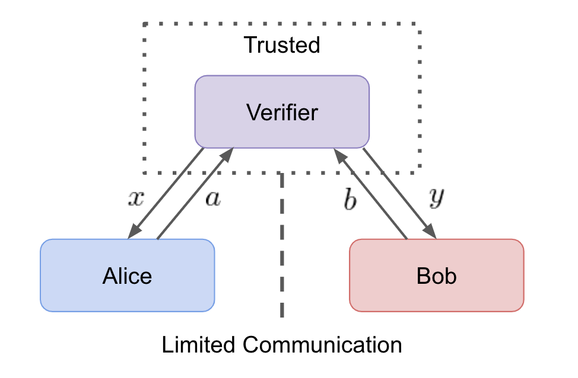
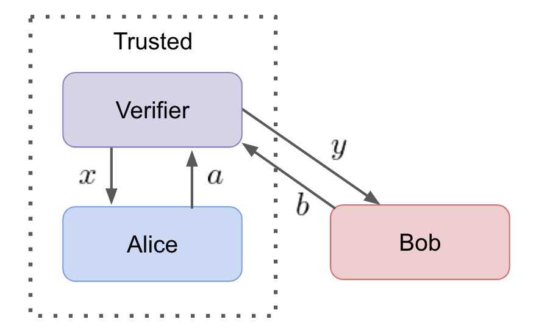

Device-Independent Tests¶
A device is a black-box system which performs some function or operation. The physical implementation inside the black-box could be classical, quantum, or even super-quantum, however it remains hidden and the focus of the test.
Quantum communication protocols require devices to perform a number of basic quantum function such as preparing quantum superpositions, measuring with incompatible projectors, and creating entanglement.
Ideal Device-Independent Tests¶
A trusted Verifier tests two unknown devices labeled Alice and Bob. A test runs many rounds of the following protocol:
- The Verifier sends Alice and Bob indpendent random inputs x and y respectively.
- Alice and Bob perform a pre-specified task that transforms inputs x and y into discrete outputs a and b respectively.
- The Verifier records a and b and repeats the test.

After many rounds have been run, the Verifier can construct a joint probability distribution for the devices p(a,b|x,y). In nature, bounds known as Bell inequalities exist on the classical joint probability distributions. In certain scenarios, it is known that quantum resources facilitate the violation of Bell inequalities [1].
Test Assumptions¶
- Inputs x and y are sampled from independent random distributions and are private to each party.
- The prior distributions of inputs are uniform and known to all parties.
- Alice and Bob have limited communication resources.
Communication Resources¶
Each test uniquely specifies the allowed communication resources and their limitations. The communication resources are ordered from strongest to weakest [2]
- Quantum Communication: quantum states (qubits)
- Classical Communication: classical states (cbits)
- Quantum Entanglement: bipartite entanglement (ebits)
- Shared Randomness: public coin flips
- Local Randomness: private coin flips
Simulating Quantum Systems with Classical Protocols¶
Clasical simulations exist for communication resources:
- Bipartite entanglement correlations can be simulated using shared randomness and 1-cbit [3].
- Quantum communication with 1-qubit can be simulated with 2-cbits and 1-ebit [2].
Therefore, it is essential for a device-independent test to place restrictions on the communication resources used.
Communication Security and Classical Simulations¶
One of the key advantages of quantum communication is cryptography. However, secure quantum protocols rely on devices which are truly quantum to perform the protocols. If a classical pair of devices is able to simulate a quantum system, the Verifier may be fooled into thinking that devices Alice and Bob are capable of securely performing a quantum cryptography protocol. This misconception would put the verifier at risk of sharing private information with potentially malicious devices.
Partial Device-Independent Tests¶
In real-world scenarios, it is difficult to enforce communication limitations between parties. However, if one of the devices can be characterized and trusted, it can be used to ensure communication limitations. For such a scenario, the Verifier uses a trusted device to perform device-independent tests which can only pass if the unknown device faithfully performs its tasks.

For example, in a test where a single photon is sent from Alice to Bob. If Alice (or Bob) can be trusted to send (or receive) a single photon, then the trusted device can ensure the sanctity of the test. If trust in the device is compromised then the test is no longer meaningful because communication restrictions may have been broken. This would allow for a classical system to simulate quantum device statistics giving parties with malicious intent access to further information exchange.
A device-independent should only pass if both parties faithfully execute their tasks. It doesn't matter whether Alice or Bob is the trusted device because ensuring one party fulfills their duty is sufficient to deduce that the other party must have as well.
A partial device-independent test allows for a single party to verify a unknown devices capabilities. It does not provide the unknown device with any trust because the verifier could be sharing Bob's secret inputs with Alice. The solution is for each devices to characterize the other.
- A Verifier which trusts Alice runs the handshake protocol to verify Bob's quantum capabilities.
- A Verifier which trusts Bob runs the handshake protocol to verify Alices' quantum capabilities.
It is not advantageous to use the trust between Verifier and device to cheat at the test. The objective of running the test in the first place is to verify an unknown device. If the Verifier cheats, the sanctity of the test is diminished and removing any incentive for the Verifier to cheat.
Device Trust Through Community Verification¶
For a partial device-independent test to be meaningful, the Verifier must trust one of the devices involved. Gaining this trust is a difficult task, however, community-driven approach may be able to improve the trust of an unknown device. Community verificication could be implemented in the following way.
In the setting of a quantum network, there will be many connected devices. To establish trust of a device's quantum capabilities, it is possible for a Verifier to use the untrusted device to run tests against a large number of devices. If the community of devices has a large number of quantum capable devices, it would be possible leverage the community to gain trust in an untrusted device.
Furthermore, in a realistic setting, quantum devices used on a quantum network will be subject to standardization and regulation. This will provide unknown devices some merit of truth about their quantum capabalities. With a community verification system in place, a breach of network security would require the majority of devices to be compromised. These are hypothetical situations, but illustrate how community verification might be useful to gain basic trust of a device.
References¶
[1] Brunner, Nicolas, et al. "Bell nonlocality." Reviews of Modern Physics 86.2 (2014): 419.
[2] Buhrman, Harry, et al. "Nonlocality and communication complexity." Reviews of modern physics 82.1 (2010): 665.
[3] Toner, Benjamin F., and Dave Bacon. "Communication cost of simulating Bell correlations." Physical Review Letters 91.18 (2003): 1879